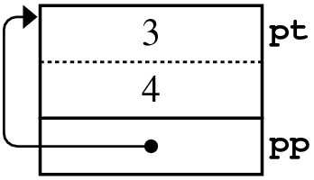

Pointers & Structures
We often use pointers in conjunction with structures or objects. Pointers are also used to work with the built-in C++ collection type, the array. We'll look at structures in the lesson, and arrays later.

Click the "running man" to visualize these statements, which create two variables.
Point pt{3, 4};
Point *pp = &pt;

The variable pt is a Point with the coordinates 3 and 4. The variable pp is a pointer, pointing to pt. The memory diagram of these declarations looks like this. From pp, you move to the object by using dereferencing, so *pp and pt are synonyms.If pt and *pp are effectively synonyms, you might expect to access pt.x by writing *pp.x. Surprisingly, you cannot. The expression *pp.x uses two operators so when you evaluate it, the dot operator has higher precedence than the dereferencing operator, so the compiler interprets the expression as *(pp.x).
Of course, pp is a pointer, and that pointer doesn't have a member called x, so you get an error. Instead, you must write (*pp).x which is certainly awkward.
A (preferred) alternative, the operator -> (usually read aloud as arrow), combines dereferencing and selection into a single operator. Knowing that, you can see there are three ways to print x and y in the variable pt:
cout << "(" << pt.x << "," << pt.y << ")" << endl;
cout << "(" << (*pp).x << "," << (*pp).y << ")" << endl;
cout << "(" << pp->x << "," << pp->y << ")" << endl;- Line 1 uses a structure variable (an object) and the member selection operation (the "dot") operator, to select the members x and y.
- Line 2 uses the temporary structure object obtained from dereferencing the pointer pp. That object is used with the member selection operator to select the same two variables, x and y.
- Line 3 uses the pointer pp and the arrow operator to access the data members without first making a temporary copy.
Using the arrow operator is more efficient, and less typing, so you should use it when working with pointers to structures.
 This course content is offered under a
CC
Attribution Non-Commercial license. Content in this course
can be considered under this license unless otherwise noted.
This course content is offered under a
CC
Attribution Non-Commercial license. Content in this course
can be considered under this license unless otherwise noted.